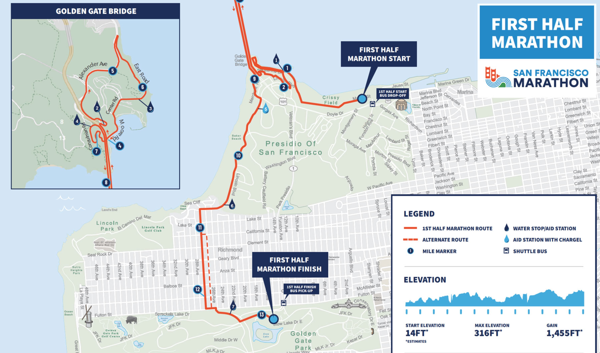

To see Micah run the San Francisco Half Marathon, I arose at 5:30 am. Driving up 280, I watched the most beautiful sunrise unfold over the East Bay hills. There was no traffic in San Francisco, so I arrived at the Golden Gate Bridge parking lot by 6:20 am and the clouds were still pink, with some sun coming in from the east.
The top-ranked marathoners were already across the bridge. You can see just their heads in the photo, if you look carefully.
Route
Micah’s start time at Crissy Field was about 6:50 am. The run would take him to Fort Point, then up a steep grade to the Bridge. The top of this grade was my first lookout. Then across the Golden Gate Bridge, up and down some challenging hills near Sausilito, back again across the Bridge, and to a finish in Golden Gate Park.

Running North
Although I was early, it was fun to join with the cheering crowd. People were holding signs and cheering on both their own runners and random ones, too. Micah texted me that he’d be there soon, and I had a tripod and a quick shutter release ready. He rounded the corner looking great. What a thrill to see Micah run with the Bridge as a backdrop.


Running South
Next he joined the river of runners—a river that flowed for hours—to run across the pedestrian walk way on the east side of the Bridge. It’s a 3.5 mile run across the bridget and back, and the race course extended that with a hill loop on the Marin side. So I had some time to wander about and pick my next vantage point.
Micah next texted me when he was at the near tower (746 feet high), and I was ready! Again I had the tripod and shutter release set up, and this time I took a video on my cell phone, too. The video is at the bottom of the page.
(click any of these for bigger photos)


Alas, Micah ran quite fast after the Bridge, and I could not make it to the finish in Golden Gate Park in time. He made his target time, and had a great run. Very proud of Micah!